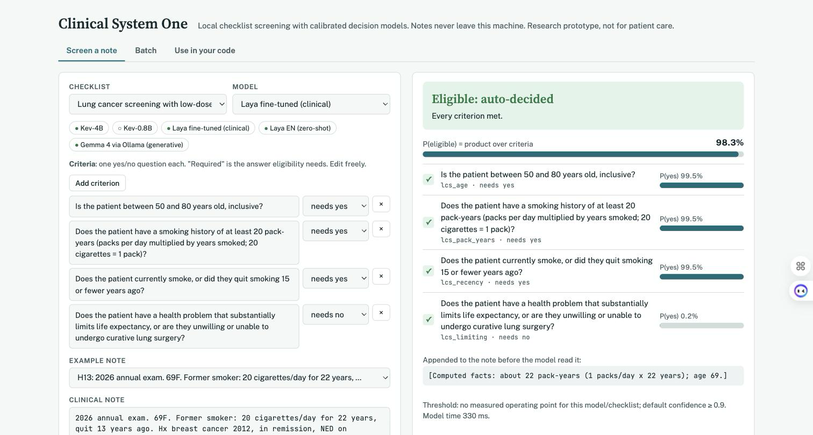

Project · run it yourself
Screening app
This is a local web app for screening clinical notes against checklists. It runs the same models and the same code as the study, and the note never leaves your machine.
Start it
git clone https://github.com/menonpg/clinical-system1 && cd clinical-system1
./setup.sh # clones Laya + Kev, builds both environments
app/run.sh # starts Kev-4B (:8009) and the app, then opens http://127.0.0.1:8765
app/run.sh --no-kev # CPU-only: Laya, or Ollama if it is running
What it does
- Screen a note. Pick the USPSTF lung or AAA checklist, or build your own by adding criteria in the browser, each with the answer it requires. Pick a model and an error budget. You get P(yes) per criterion, P(eligible) as the product of the required answers, the criteria that failed, and one of three decisions: auto-eligible, auto-ineligible or send to clinician review.
- Threshold. For the built-in checklists, the app uses the confidence threshold measured in the study for that model at your error budget (
app/operating_points.json). For custom checklists it falls back to 0.90 and warns you to measure your own. - Computed facts. An optional deterministic hook appends pack-years and years since quitting. The app shows exactly what it added.
- Batch. Paste many notes, or load the 40 hand-written examples, and get a table of decisions.
- Use in your code. The current checklist as a System One HTTP request (works against any Kev server) and as Python.
Screening Explorer
A single-file page with every model's recorded predictions on the study notes. Drag the automation threshold to see how many notes are auto-decided, how many go to review, and how many automated decisions are wrong. Then open any note for its criterion-by-criterion audit. Open the explorer.
API
POST /api/screen {"note": "...", "model": "kev4b", "facts": true, "budget": 5,
"checklist": {"key": "lcs", "title": "...", "criteria": [{"key": "lcs_age", "question": "...", "required": true}, ...]}}
POST /api/batch {"notes": ["...", "..."], ...same fields}
GET /api/config checklists, models (with availability), examples